Una medicina
PERSONALIZADA.
Arpa Médica es una referencia de excelencia en la Reproducción Asistida, por lo avanzado de nuestras técnicas, la eficacia de nuestros tratamientos, por nuestro trato humano y por la calidad de nuestros profesionales.
El Dr. Ignacio Palomo, director de Arpa Médica y pionero de la Reproducción Asistida en España, ha traído al mundo a más de 20.000 niños nacidos gracias a las más innovadoras técnicas de RA. Esta labor es la que nos permite contar con el reconocimiento de nuestros pacientes, de los profesionales y de las instituciones.
Pero Arpa Médica es mucho más que Reproducción Asistida. Arpa Médica abarca un abanico muy amplio de especialidades médicas con la filosofía de que para nosotros, lo primero son las personas.
Ese es nuestro compromiso y nuestra contribución a la sociedad: una Medicina humanista, que escucha y conoce a las personas que nos entregan su confianza. Somos un grupo de alta calidad en la medicina privada, pero en colaboración permanente con las instituciones, unidos en el esfuerzo por conseguir una medicina de excelencia para todos.
ESPECIALIDADES
Quiénes somos
Arpa Médica tiene como primer objetivo el de ofrecer al paciente y a sus familiares el mejor trato médico y humano posible. Hay una medicina humanista, que es la que nos define. Consiste en dedicar a los pacientes el tiempo que necesiten. Supone escuchar y atender a la circunstancia personal de todas y cada una de las personas que han depositado su confianza en nosotros.
Una medicina que tenga en cuenta a la persona es capaz de acompañarle en su vida, desde el nacimiento hasta la edad adulta, es capaz de prevenir y dar soluciones a todos los problemas de salud que se puedan dar en el desarrollo pleno de una vida.
Estamos dedicados en exclusiva a su salud. Por eso nuestro modelo consiste en disponer todos los recursos necesarios para ofrecer una atención personalizada, una atención de calidad. Arpa Médica nace del esfuerzo conjunto de un grupo de profesionales de la medicina, dirigidos por el doctor Ignacio Palomo, para coordinar una oferta global, flexible, rápida y eficaz, que responda con agilidad para que el paciente pueda realizar en el menor tiempo posible las consultas, las pruebas y los tratamientos.
Nacimos como un centro médico especializado en la Ginecología y la Reproducción asistida. Veinte años de experiencia en ese campo nos han permitido desarrollar en estas dos décadas una oferta médica capaz de atender con calidad y excelencia todas las necesidades de las familias que en este tiempo nos han dado su confianza en un momento tan vital como el de traer una nueva vida al mundo. Arpa Médica es la confirmación de que durante todo este tiempo hemos puesto las necesidades de nuestros pacientes en el centro de nuestra actividad. Buscamos la mejora de las personas con los mejores profesionales.
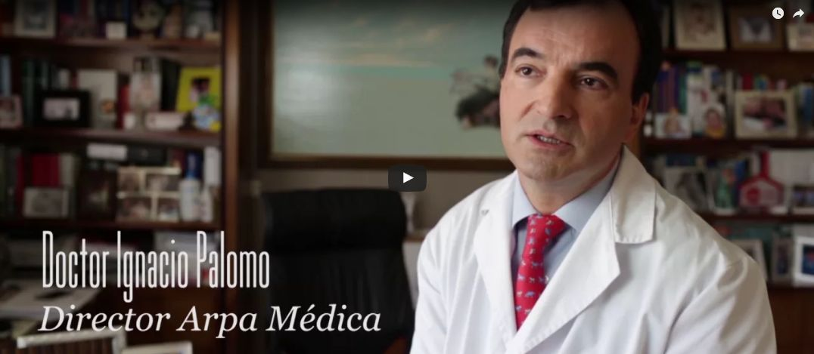
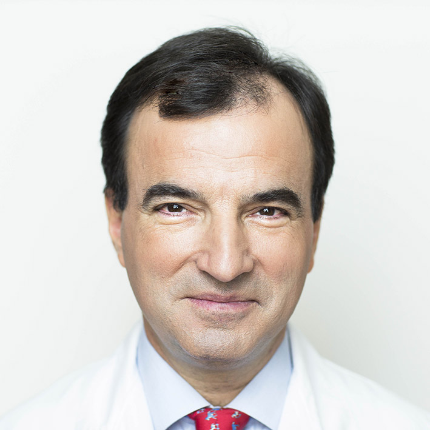
Misión
Nuestra misión es cuidar, sanar, comprender y acompañar. Nuestro foco está puesto en la salud y el bienestar de las personas. Ponemos a su disposición unos servicios sanitarios de máxima calidad, con medios tecnológicos avanzados. Pero nuestro principal capital es el capital humano: profesionales que saben escuchar, que invierten tiempo en las personas, y que conocen el valor de una medicina cercana, la del médico que conoce a su paciente, que cuida de todo su entorno familiar, y que le acompaña en todos los procesos que implican a la salud como un concepto amplio.
Por eso la oferta de servicios de Arpa Médica está adaptada a las necesidades de todas y cada una de las personas que confían en nosotros. Nuestros horarios son flexibles, y tienen en cuenta que el cuidado de la salud se debe compaginar con una vida profesional intensa y una dedicación a la familia que exige mucho tiempo. Nos gusta decir que no tenemos pacientes: tenemos personas que confían en nosotros y a los que ofrecemos un cuidado que abarca todas las necesidades, porque pensamos que no hay medicina eficaz que no tenga en cuenta todas las dimensiones del ser humano.
Visión
Arpa Médica quiere ser una referencia de excelencia en la medicina, por el trato humano y por la calidad de nuestros profesionales y la eficacia de nuestros tratamientos. Nuestra experiencia en el ejercicio de la medicina nos ha permitido contar con el reconocimiento de nuestros pacientes, de los profesionales y de las instituciones como una entidad de referencia.
Buscamos desarrollar una marca que tenga una identidad muy sólida, con una excelente reputación, que sea capaz de generar el orgullo de pertenencia a un equipo innovador, y que sea atractiva para que las nuevas generaciones de profesionales de la medicina desarrollen una carrera con un largo recorrido de éxitos profesionales. En Arpa Médica creemos en el talento, y queremos ser un polo de atracción para nuevos especialistas con capacidad de sumarse a nuestro equipo y aportar innovación.
Nuestra gestión está orientada a la creación de valor, pero entendemos que nuestra contribución es aportar valor a la sociedad. Queremos ser una pieza de alta calidad dentro de la medicina privada, pero en contacto permanente con las instituciones y una voluntad decidida de colaboración con el Sistema Público de Salud que nos permita a todos cumplir con el derecho fundamental a una atención sanitaria de máxima calidad.
Los profesionales de Arpa Médica, con el Doctor Palomo a la cabeza, colaboramos también con las instituciones educativas en la formación de nuevas generaciones de médicos, aportando experiencia y conocimiento. La investigación es una de nuestras prioridades y la docencia nos permite compartir innovación y trasmitir nuestros valores a los estudiantes. Nuestros centros médicos son también lugares donde hacemos una labor constante de difusión de la cultura de la salud y la prevención.
Arpa Médica tenemos también entre nuestros objetivos, un programa ambicioso de desarrollo de la Responsabilidad social. Somos un centro que nació sobre la base de la Ginecología y que ha ampliado sus servicios a través de la atención a las familias que nos han dado su confianza. Por eso nos implicamos en campañas que tienen su objetivo en el reconocimiento de los derechos de la mujer y la atención sanitaria a familias de zonas desfavorecidas.
EQUIPO MÉDICO
Ignacio Palomo
and the stars had ceased to twinkle. By the same illusion which lifts the horizon of the sea to the level of the spectator on a hillside, the sable cloud beneath was dished out, and the car seemed to float in the middle of an immense dark sphe
Elena Fuente
and the stars had ceased to twinkle. By the same illusion which lifts the horizon of the sea to the level of the spectator on a hillside, the sable cloud beneath was dished out, and the car seemed to float in the middle of an immense dark sphe
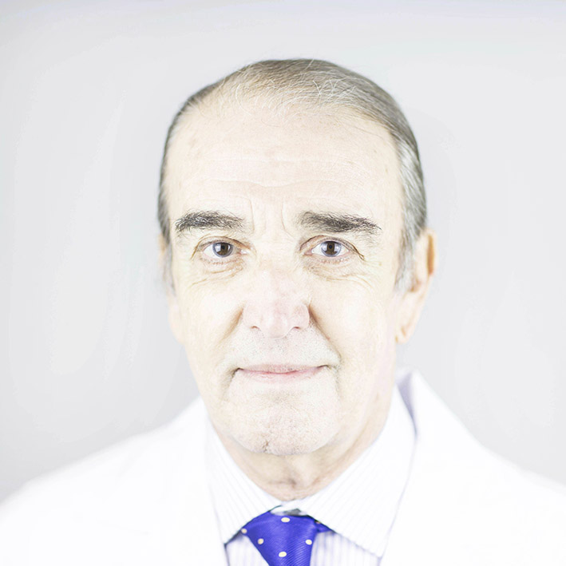
Daniel López Díaz
Especialista
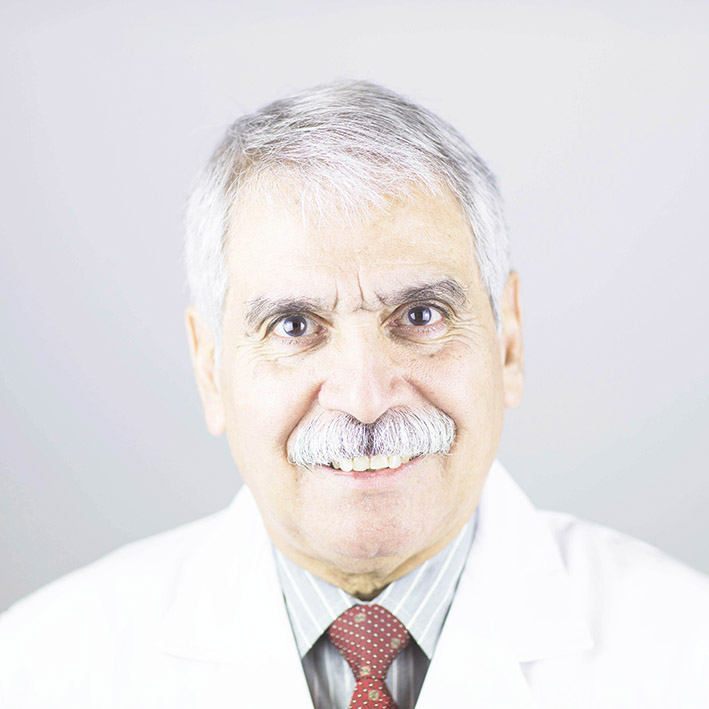
Faustino Ávalo
Especialista
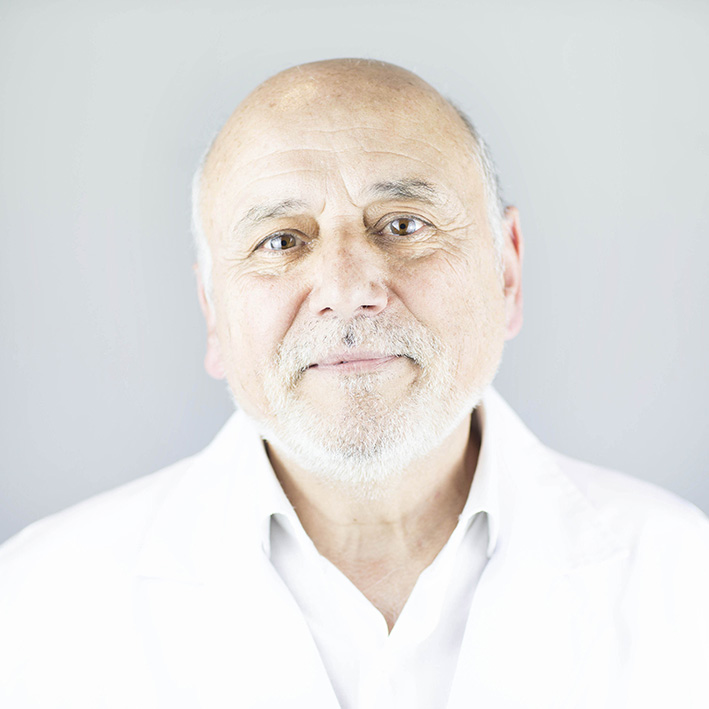
Fernando Moreno
Especialista
Inmaculada Muñoz
Especialista

Irene Santacruz
Especialista
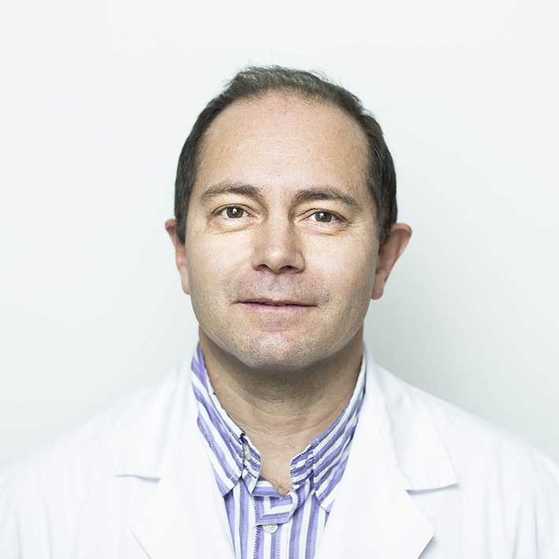
Jesús Lázaro
Especialista
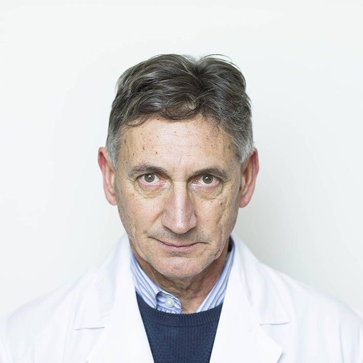
José Antonio Carrillo
Especialista
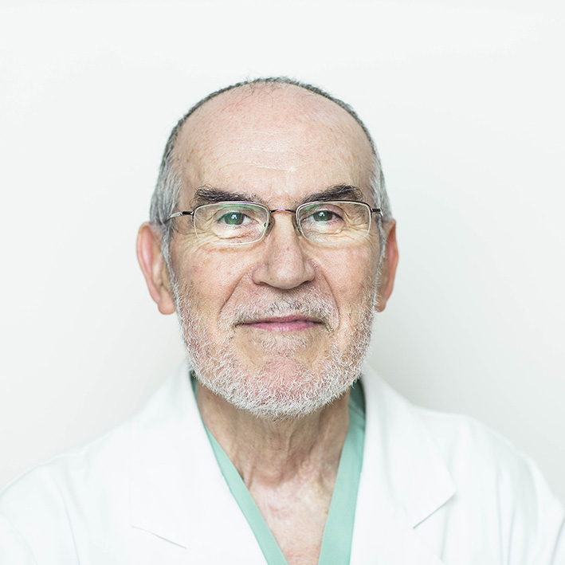
Marcelino González
Especialista
María Estévez
Especialista
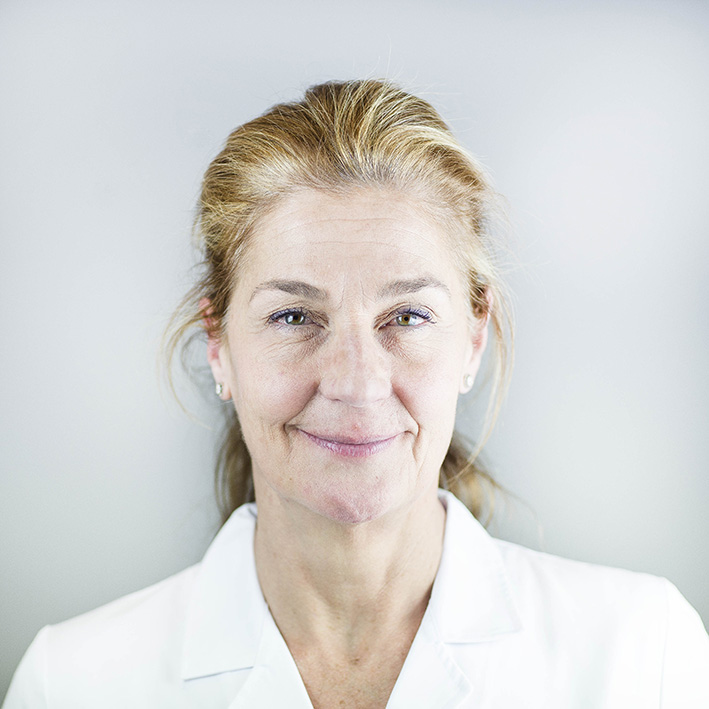
Maria Luisa Argente
Especialista
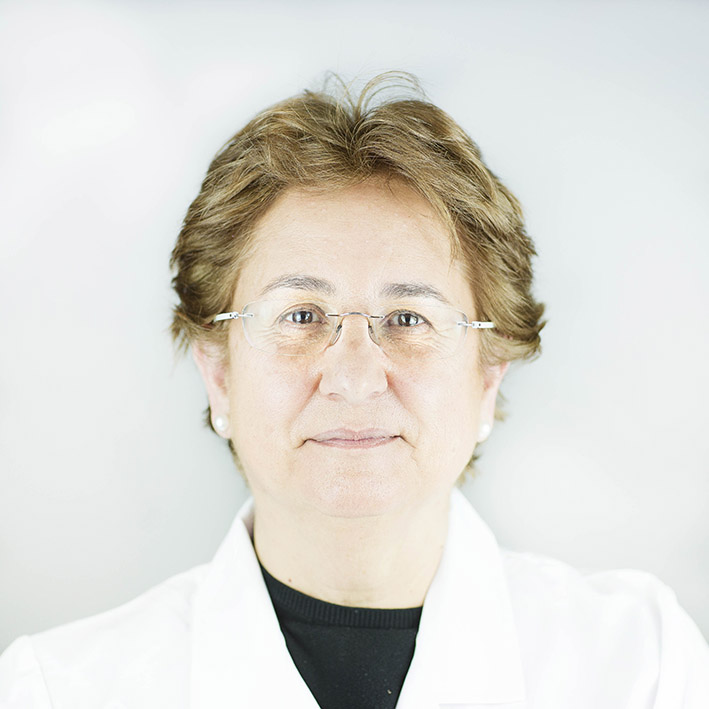
Natividad Lapuente
Especialista
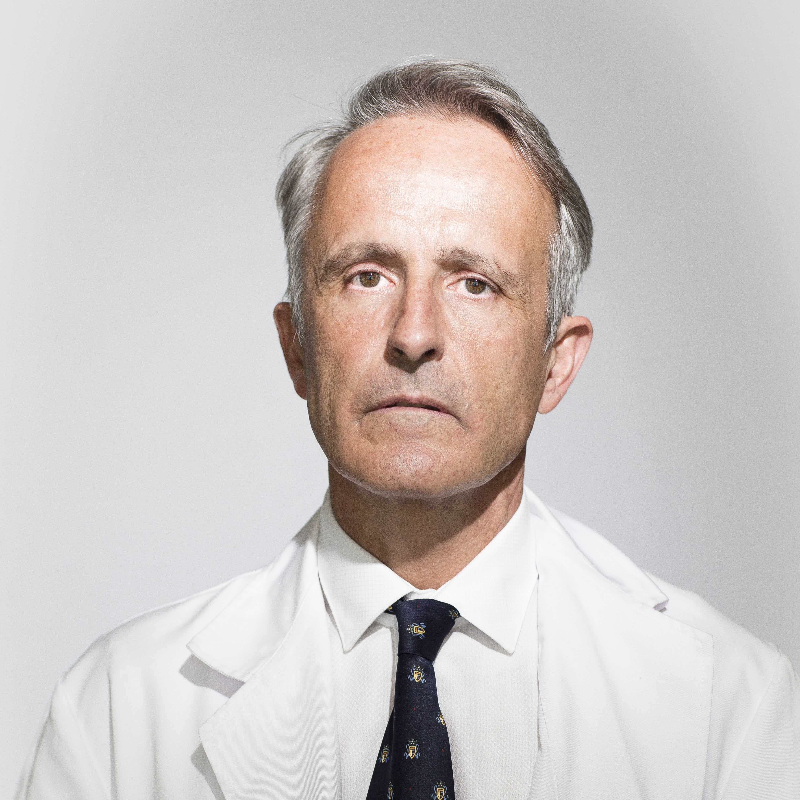
Rafael Díaz Delgado
Especialista
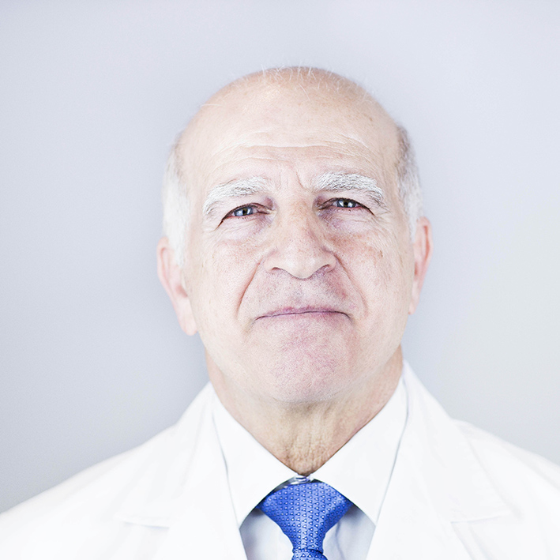
Talal Jalloul
Especialista
Ventajas
Ventajas
Equipo
Los mejores profesionales y un servicio cercano para que recibas el mejor tratamiento.
Centros
Contamos con todos los tratamientos para ofrecerte una atención integral.
Tecnología
Invertimos en los últimos avances para llegar a soluciones más precisas.
Financiación
Lo primero es tu salud y te ayudamos a que puedas disfrutar de ella.
Diagnóstico por Imagen
Arpa Médica dispone de un magnífico equipo profesional y de los últimos avances en tecnología y técnicas para trabajar con éxito en el diagnóstico y el del paciente. El Diagnóstico de Imagen es fundamental para la detección y diagnóstico de la enfermedad, y para conocer su evolución y comprobar la eficacia de los tratamientos aplicados. Desde el seguimiento del embarazo, a una revisión ginecológica rutinaria o la detección de enfermedades más graves, la medicina actual no se entiende sin el diagnóstico por imagen.
-
ECO-DOPPLER OBSTÉTRICA: La ecografía Doppler es una ecografía en color que permite calibrar el flujo sanguíneo en cualquier arteria o vena. La información que proporciona es esencial para el estudio del cordón umbilical, la circulación cerebral y cardíaca del feto. La información obtenida a través del Doppler es muy útil para vigilar crecimiento fetal y para comprobar la circulación uterina. La ecografía Doppler también permite controlar a la embarazada con hipertensión, diabetes o problemas en la placenta o el cordón umbilical.
-
ECO-DOPPLER TRANSVAGINAL: Permite ver estructuras y órganos de la parte inferior del abdomen y la pelvis. Se utiliza para evaluar los sistemas reproductivo y urinario. El ultrasonido es seguro, no invasivo y no utiliza radiación ionizante.
-
ECO-DOPPLER GINECOLÓGICA: En las últimas tres décadas, el diagnóstico en ginecología ha dado un vuelco con la generalización de las ecografías abdominales y, sobre todo, de la ecografía vaginal. Su incorporación al control rutinario de las pacientes permite detectar procesos neoformativos en fases muy iniciales, lo que permite ganar tiempo para aplicar el tratamiento.
-
ECOGRAFÍA 4D: Una ecografía 4D como una ecografía en tres dimensiones que se mueve, que va cambiando en el tiempo, es como un vídeo o una película. Las ecografías en 3D/4D aportan, por sí solas, suficiente valor diagnóstico en el examen de la anatomía fetal y en la detección de anomalías congénitas. Permite una mejor visualización del feto y por lo tanto facilita la detección de anomalías como el labio leporino, la espina bífida, cardiopatías o defectos del tubo neural. La ecografía 3D y 4D se realiza si se sospecha alguna malformación con la ecografía de 2D que necesite confirmación.
-
ECOGRAFÍA 20 SEMANAS: La ecografía de la semana 20, llamada también ecografía morfológica, permite observar con detalle toda la anatomía del bebé para descartar posibles malformaciones fetales.
-
ECOGRAFÍA 12 SEMANAS: La de la semana 12 es la de la primera ecografía importante, desde el punto de vista médico, en la valoración de un embarazo. Se trata de una pieza clave en la detección de anomalías cromosómicas, a través de la medida de los huesos del embrión.
Nutrición
La nutrición es la actividad cotidiana que más influencia tiene sobre la salud y contribuye a que vivamos más años y en mejores condiciones. Hoy conocemos que determinadas enfermedades están directamente relacionadas con desequilibrios en la alimentación. Obesidad, hipertensión, hipercolesterolemia o algunos tipos de cánceres están directamente relacionados con la alimentación.
Alimentarse no sólo consiste en comer para vivir o para saciar el hambre, es algo mucho más complejo. Es un acto social, en el que intervienen muchos otros factores además del puramente nutricional: las costumbres y cultura del lugar en que vivimos; las modas y medios de información; el entorno familiar; el sexo, la edad o las preferencias personales e incluso las creencias religiosas. Incluso el estado de ánimo y la salud influyen sobre qué y cómo comemos.
Una alimentación es adecuada si en verdad es capaz de cubrir las necesidades del organismo; de acuerdo a las características personales, con el fin de alcanzar o mantener un buen estado nutricional y de salud.
La Unidad de Nutrición de Arpa Médica está orientada a conseguir una alimentación equilibrada, que conserve la salud del paciente y que potencie su energía y vitalidad. Con la ayuda de la más moderna tecnología y el apoyo de la analítica genética, podremos saber qué motiva el aumento de peso de un paciente o el porqué de su dificultad para adelgazar o para engordar, si este es el caso. Cada paciente es sometido a un evaluación nutricional completa y se le indica un tratamiento dietético para resolver su problema ya sea este obesidad, diabetes, hipertensión arterial, anorexia, bulimia o estreñimiento.
Fisioterapia y osteopatía

La Unidad de Fisioterapia y Osteopatía de Arpa Médica trabaja eficazmente para prevenir las lesiones y recuperar al paciente en el menor tiempo posible para que puedan seguir con sus actividades cotidianas tras la terapia. La Unidad de Fisioterapia y Osteopatía de Arpa Médica emplea las técnicas más eficaces de este campo para que sus pacientes, desde neonatos hasta adultos, recuperen los tejidos corporales que han sido dañados por lesiones u otras alteraciones que hayan sufrido. Nuestros especialistas elaboran un plan a medida para cada paciente en base al diagnóstico médico y objetivos marcados. Los tratamientos de Fisioterapia y Osteopatía se realizan manualmente o con estímulo técnico y facilitan una rápida y eficaz curación.
Sala de Extracciones
La sala de extracciones de Arpa Médica, junto con el laboratorio, es un lugar clave para analizar la salud de nuestros pacientes, diagnosticar sus enfermedades y hacer el seguimiento de las patologías a través de las muestras requeridas al paciente.
El Laboratorio es uno de los servicios centrales del hospital en el que se reúne toda la tecnología y el personal necesarios para analizar todas las muestras de sangre, orina, y exudados.
Con un horario que cubre las horas de actividad del centro, el equipo de Arpa Médica está preparado para realizar análisis a sus pacientes en el momento de la consulta, sin necesidad de acudir al centro en ayunas, por la mañana temprano.
Un sistema informático gestiona el proceso de extracción de las muestras y permite confirmar los datos del paciente, archivar los resultados y realizar consultas y estadísticas. Este sistema reduce la posibilidad de error en la tramitación y mejora la seguridad del paciente.
Compromiso social
En Arpa Médica nos mueve una motivación fundamental: ejercer la medicina y servir a las personas. Somos conscientes de que en el mundo hay muchos seres humanos que no pueden acceder a los servicios básicos de salud. Con muy poco de lo que nosotros tenemos, su vida cambiaría. Muchas veces se trata de combatir enfermedades que en Occidente están erradicadas. En otras muchas ocasiones, se trata del acceso a un saneamiento eficaz en su vida cotidiana. Pero también nos encontramos con problemas que tienen su origen en la cultura o en las creencias, como todo lo que tiene que ver con la mutilación genital femenina.
Experiencia
Por todo eso hemos desarrollado planes de compromiso social que nos permitan compartir nuestros conocimientos y nuestra capacidad de llevar salud a personas que no la tienen. Contamos con una larga experiencia. El fundador y director de Arpa Médica, el Dr. Ignacio Palomo, ha dirigido proyectos de cooperación en países de la América Hispana. Arpa Médica alberga además de forma frecuente, jornadas de educación, impulsa proyectos de intercambio con organizaciones no gubernamentales, y promueve el cumplimiento del derecho fundamental de las personas a una sanidad básica.
Cooperación
A veces hay que ir lejos para ayudar a comunidades que necesitan servicios médicos o remedios para enfermedades endémicas. Pero para desarrollar nuestra vocación y nuestra responsabilidad no siempre es necesario desplazarse a otros continentes. Muchas personas por su condición de inmigrantes o por su situación social nos necesitan, y en Arpa Médica hacemos un esfuerzo constante por estar a su lado. Nuestras puertas están abiertas para todas aquellas organizaciones que tengan proyectos a los que podamos contribuir y en los que podamos cumplir nuestro compromiso con la sociedad.

Formación y docencia
En Arpa Médica creemos en la formación como pilar fundamental del progreso de la Medicina. La Universidad nos permite transmitir la riqueza de la experiencia de años de consulta, de cirugía, y el estudio de los casos más significativos y relevantes. Pero también nos aporta innovación y la posibilidad de encontrar talento para nuestros centros médicos, que están abiertos a la incorporación de titulados y especialistas que aporten conocimiento y busquen experiencia. El Dr Palomo desarrolla su labor docente a través de la Universidad Alfonso X el Sabio, de cuya Facultad de Medicina es profesor. Su tesis sobre Transplante hepático en embarazadas, premio de la Academia de la Medicina a la mejor tesis doctoral, le acredita como uno de los mejores cirujanos de la medicina española. Arpa Médica colabora también con fundaciones, como la Fundación FIDE, en la que nuestros especialistas han participado en sesiones sobre bioética, y en debates sobre las nuevas regulaciones y cambios legales a los que nos obligan innovaciones en el campo de la biomedicina, los transplantes, la maternidad subrogada o la edición genética del método CRISPR.
International Visitors
The Spanish Health Care System is one of the best in the World. The World Health Organization ranks the Spanish Health Care system as number seven. Spain is also the fifth largest exporter of healthcare technology. Spanish care providers are among the most valued in the European Unión due to their excellent formation and high professional qualifications. In addition, Spain is a reference in assisted reproduction in Europe. Up to 40% of all treatments carried out in the continent are performed here. With some 15,600 treatments in 2011, Spain leads the Assisted Reproduction procedures in Europe.
Arpa Médica is a reference on excellence in health care. The human touch, the quality of our professionals and the efficacy of our treatments are our trade mark. Our patients chose us because we don´t make them wait, we welcome them in comfortable commodities and because we do care for their health. Our Health care offer covers Assisted Reproduction and Gynecology, Vascular Surgery and Angiology, Plastic Surgery and General and Digestive Surgery, among others.
Arpa Médica offers its international patients an integral service that includes hotel or any other accommodation reservations and the possibility of organizing leisure and sightseeing time. At the heart of Madrid, Arpa Médica provides a comprehensive health care service surrounded by the peculiarities that only Spain has: beautiful weather, a worldwide famous gastronomy and awesome environmental conditions. High quality accommodation, with an impressive cultural display, fabulous golf courses and endless beaches complete an unbeatable offer for an optimal recovery.
More than twenty-two thousand foreigners chose Spain every year to take care of their health. There must be a reason.
Vibrant, energetic and bustling, Madrid is in many ways similar to New York City, The city that never sleeps. From its amazing museums to its lively nightlife, Madrid is a unique capital not only in Europe, but also in Spain.
CULTURAL LIFE
Madrid has such a rich cultural life that it is hard to decide what to start with. The Museo del Prado, the Reina Sofía and the Thyssen-Bornemisza are the three vertices that make up a triangle with the most impressive art collection in the world. In addition, all three of them are located at a short walking distance from one another, so you should try to visit all three. No other city in Spain holds such a complete display of works from the great Spanish and European masters. Hanging on the walls of these three magnificent museums you will find masterpieces signed by Velázquez, Goya, El Greco, Tiziano, Rubens, Picasso, Miró and Dalí, masterpieces of all ages of painted art. Besides the fantastic permanent collections of these three museums, there are dozens of others like the CaixaForum and its vertical garden, the Sorolla Museum or the Lázaro Galdeano. But you don't have to stick to the grandest museums and galleries to admire all the art Madrid has to offer. Small galleries, cultural centers, along with temporary exhibitions by young painters in bars and restaurants round out Madrid's cultural panorama.
MADRID’S ARCHITECTURE
Madrid’s skyline is one of the most appealing in Spain and there is a perfect place to enjoy it, the rooftop terrace at the Círculo de Bellas Artes. From the top of the building, in the heart of Madrid you can contemplate the whole city, its great avenues, famous monuments, green spaces, and the capital's big skyscrapers the Cuatro Torres and the Picasso Tower. If it suits you it is ideal spot to watch the sunset while having a drink. The old Madrid, with Plaza Mayor at its core, shows how provincial Madrid once was. The 'corralas' - apartment buildings with a central courtyard and balconies running around each floor that each flat opens. The neighborhood of Lavapies has a way of showing what welcoming and talkative personalities people from Madrid have. The Hotel de las Letras, the lookout point from the Basílica of San Francisco el Grande, The Palacio Real’s overview of Campo del Moro’s gardens or the one behind the Templo de Debod show a lesser-known side of Madrid. Madrid’s expansion of the 19th century which brought us such emblematic buildings, such as the Royal Theater, Las Cortes, Banco de España, Casa de América and the mansions of the still wealthy neighborhood of Salamanca that also deserve a visit.
SHOPPING IN MADRID
Madrid is heaven on earth for shopaholics. You can find all kinds of affordable goods without compromising their quality. El Corte Inglés is the Spanish Department Store. It is spread around the city in several locations. You can find anything here: from fashion or cosmetics to life insurance. In the Barrio de Salamanca, the Golden Mile, provides you with all the big international brands from Armani to Loewe. A less expensive but very cool place for shopping is Fuencarral Street and its surroundings, Chueca, and Almirante Street. For old-world flea market bargains, head to El Rastro on Sunday, the most famous and oldest flea market in town where you can find just about any object you can imagine. The antique shops down the side streets are an interesting visit if you are into vintage.
GASTRONOMY
From the wide streets of Barrio de Salamanca to the narrow lanes of old Madrid, you can regain strength in an endless variety of bars, cafeterias and tapas places. What Madrid´s gastronomy has to offer is truly overwhelming. From starred Michelin restaurants, to fancy little places, deciding where to have lunch or dinner is not an easy choice. Lately some antique markets, like San Miguel or San Anton have been transformed into a kind of cute mini malls, where traditional food market stands rub shoulders with the most avant-garde tapas places.
NIGHT LIFE
However, if architecture, gastronomy and art make Madrid unique it’s its nightlife that makes the Spanish capital internationally famous. From a visit to a tablao to enjoy Flamenco, while having dinner or simply a drink, to attending one of the musicals on Gran Via, the night has just started. Going out for a few beers (or glasses of wine or soft drinks) is one of the locals' preferred pastimes. When the weather's nice and all the bars and restaurants open up their terraces it’s even nicer. The atmosphere in Plaza de la Cebada and the Cavas, is impossible to beat anywhere else. Malasaña with its mixture of modern bars with vintage decor and ritty taverns is another good option. Before coming back home, very late at night, a visit to San Ginés, for a chocolate with churros is mandatory. San Ginés has been offering chocolate for a century. You will be amazed of who has tasted it, which you’ll be able to tell from the pictures hanging on the walls.
OTHER INTERESTS
Once in Madrid, you can´t miss Santiago Bernabeu Stadium or Las Ventas bullfighting Plaza. If your visit is long enough, you can make the most of it by travelling to the close cities of Aranjuez, with its magnificent palace and gardens; Segovia to visit its spectacular aqueduct, the Imperial City of Toledo or the walled city of Avila.And if you are lucky enough to have some more time to spare, Sevilla and Córdoba are at around two hours travel by High Speed Train and they are both definitely worth your time.
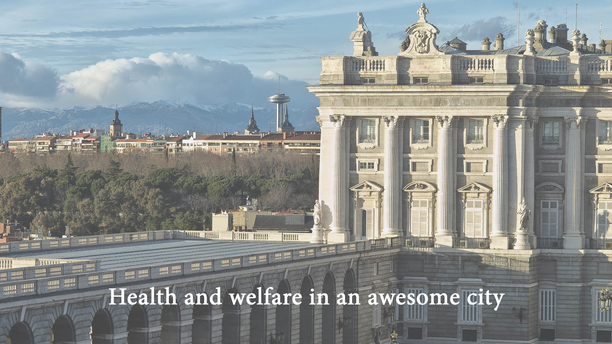
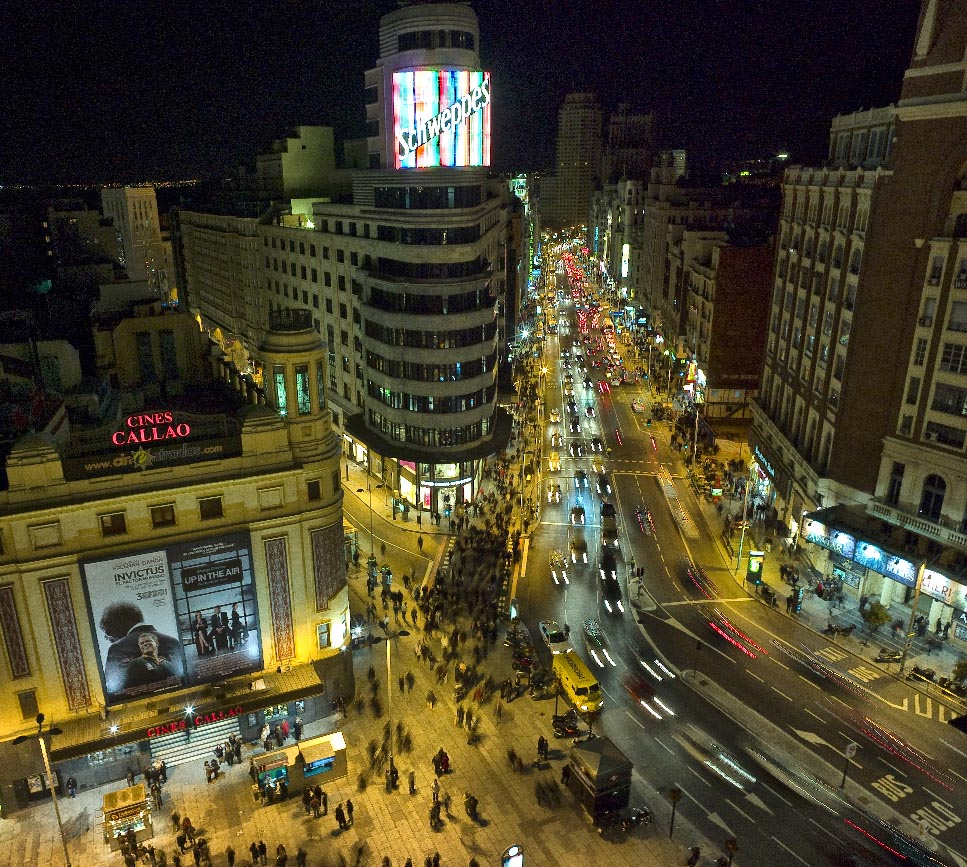
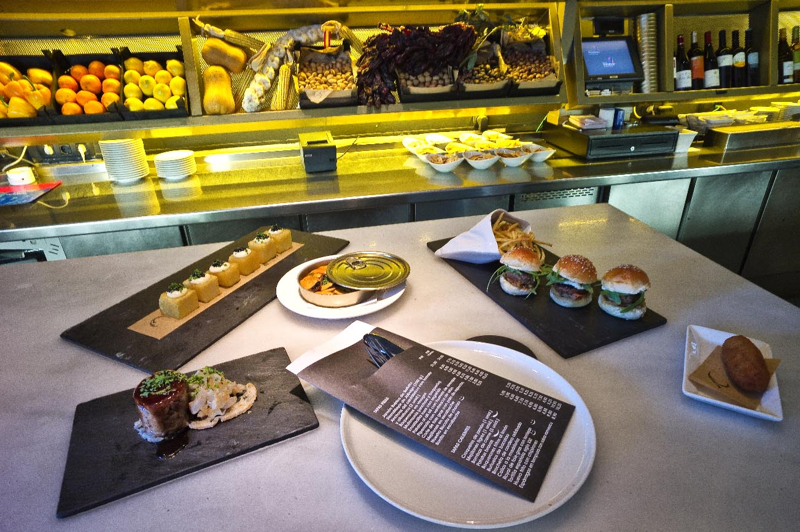
Todos los derechos reservados
® Arpa Médica 2017.